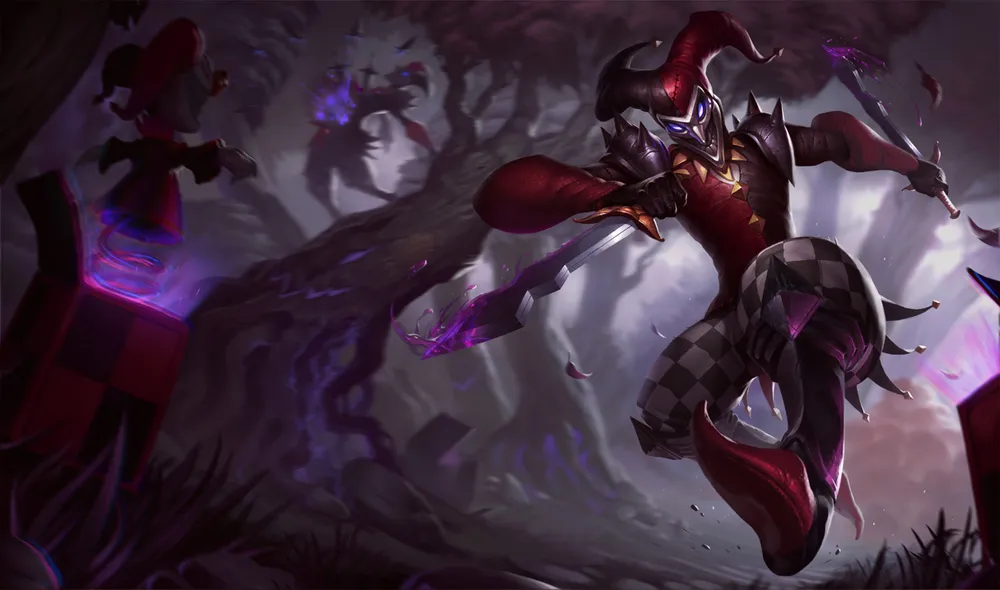

샤코는 오래 전, 외로움을 타던 어느 왕자를 위한 장난감으로 만들어졌다. 하지만 이제는 살육과 참사를 즐기는 마법 깃든 인형이다. 이전에는 친절한 마음씨를 지닌 광대였지만, 흑마법으로 타락하고 사랑하는 이를 잃은 상실감 때문에 오로지 불쌍한 인간들을 고문하는 것에서만 기쁨을 느끼게 되었다. 장난감과 단순한 속임수를 이용하여 상대를 농락하고 목숨을 빼앗은 다음, 유혈낭자한 '유희'의 결과에 만족하며 웃는다. 한밤중에 음산한 웃음소리가 들리는가? 그렇다면 이 악마의 어릿광대에게 다음 장난감으로 선택을 받은 것인지도 모른다. 
초반 능력치는 꽤 좋은 편이다. 특히 기본 공격 속도와 체력 재생은 최상위권이다. 이동 속도도 Q라는 걸출한 스킬이 있음에도 345으로 상위권인데, 평타를 섞어야 하는 암살자임에도 사거리가 125밖에 안 되는 보상 차원으로 보인다. 다만 방어 능력치는 다소 허약한 편이고, 공격력과 공격 속도 모두 아쉽고 마나 소모량이 적은 챔피언이 아닌데도 마나 능력치가 낮아 생각없이 스킬을 막 쓰기가 힘들다.